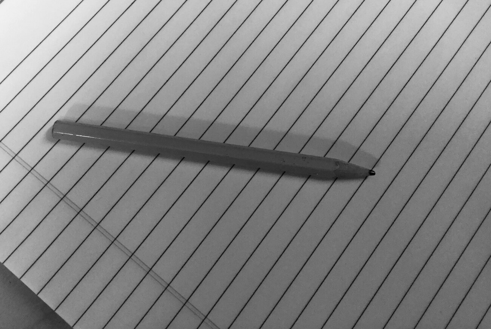
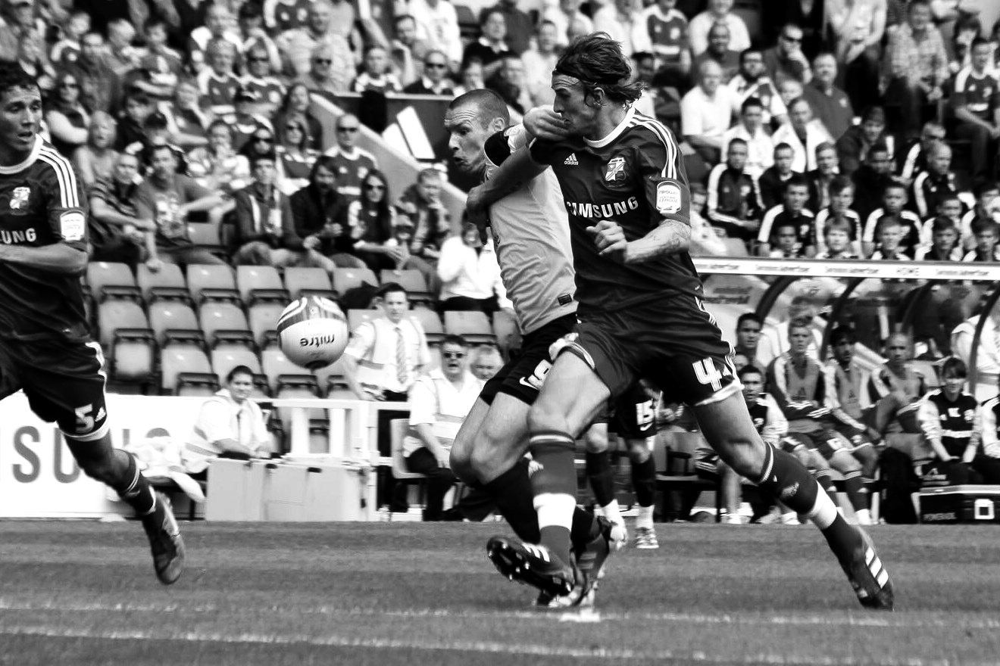

SWINDON · 1950
COUNTY GROUND · FOTO: ANDREW SMITH · CC BY-SA 2.0 (MODIFICADA)
GRADA Y ESPECTADOR: RECREACIÓN
FICHA
RECREACIÓN
PIZARRA: RECREACIÓN
DESCANSO

FOTO: JONAS PETERSSON · CC BY-SA 4.0 (MODIFICADA)
NOTAS: RECREACIÓN
SIN FOTO
CONTABLE · RAF
LIBRETAS: RECREACIÓN

HOY
COUNTY GROUND · 2011
FOTO: STEVE DANIELS · CC BY-SA 2.0 (MODIFICADA)
Fotos: Andrew Smith (CC BY-SA 2.0), Jonas Petersson (CC BY-SA 4.0), Steve Daniels (CC BY-SA 2.0), modificadas, vía Wikimedia Commons. Grada, pizarra, notas, ficha y libretas: recreación.